인쇄산업기사 (2012-08-26 기출문제)
1과목: 인쇄공학
1. 히키(hicky)에 관한 설명 중 틀린 것은?
- 잉크의 건조피막이 혼입하면 발생하기 쉽다.
- 잉크의 택(tack)이 낮을수록 발생하기 쉽다.
- 종이의 캘린더링 롤이 지분 등으로 오염되면 발생하기 쉽다.
- 용지를 자를 때 생긴 먼지나 종이가루가 판에 붙었을 때 발생하기 쉽다.
(정답률: 알수없음)

2. 스타타겟(star target)으로 볼 수 없는 것은?
- 망점의 퍼짐(dot gain)
- 슬러(slur)
- 더블링(doubling)
- 히키(hicky)
(정답률: 알수없음)
3. 다음 그림의 2중 중첩 인쇄에서 트래핑 값은 얼마인가?
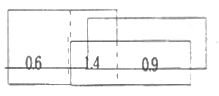
- 77%
- 83%
- 85%
- 88%
(정답률: 알수없음)
4. 인쇄환경과 잉크의 유동특성을 잘못 설명한 것은?
- 종이 뜯김(picking)과 잉크의 택(tack)은 상관성이 있다.
- 인쇄속도가 상승하면 잉크의 택(tack)이 상승한다.
- 인쇄실 온도가 낮아지면 잉크의 택(tack)이 상승한다.
- 잉크의 유화가 많이 일어나면 잉크의 택(tack)이 상승한다.
(정답률: 알수없음)
5. W-F(Walker-Fetsko)의 전이방정식은 다음과 같다. 옳은 설명은?
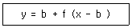
- y 는 종이에 전이된 잉크의 양이다.
- b 는 판상에 공급된 잉크의 양이다.
- f 는 종이 요철부분에 고정화된 잉크의 양이다.
- x 는 종이요청에 고정되고 남은 잉크 필름의 분열비이다.
(정답률: 알수없음)
6. 다음 중 점도를 측정하는 계기가 아닌 것은?
- 페란티 셔레이(Ferranti Shirley)
- 밴드 비스코 미터(Band visco meter)
- 잔컵(Zahn cup)
- 볼밀(Ball mill)
(정답률: 알수없음)
7. 컬러 인쇄를 하는 인쇄실의 조명조건으로 가장 적당한 것은?
- 색온도가 5000K 이고, 연색평가지수가 90~95인 조명
- 색온도가 5400K 이고, 연색평가지수가 85~90인 조명
- 색온도가 5500K 이고, 연색평가지수가 93~95인 조명
- 색온도가 6500K 이고, 연색평가지수가 95~100인 조명
(정답률: 알수없음)
8. 종이 주름의 원인에 대한 설명 중 옳지 않은 것은?
- 종이 자체가 물결져 있다.
- 얇은 종이나 종목인 경우에 발생하기 쉽다.
- 급지판 위에 종이 누름 굴림대 종류의 위치가 나쁘다.
- 축임물 과다로 종이 늘어짐에 의해 다색 인쇄의 인쇄유니트를 통과할 때 발생한다.
(정답률: 알수없음)
9. 인쇄용지의 정전기 발생에 대한 설명으로 옳은 것은?
- 겨울철보다는 여름철에 정전기가 많이 발생한다.
- 종이끼리 부딪치거나 종이가 테이프 등과 스치는 것에 의해 발생한다.
- 정전기는 상대습도가 약 40% 이상일 때 가장 많이 발생한다.
- 겨울철에 난방을 하면 정전기 발생은 감소한다.
(정답률: 알수없음)
10. 하프톤 인쇄물의 망점을 명도로 표현하는 것은?
- 망점 면적비
- 잉크의 두께 차
- 주변 오염도
- 하프톤 값
(정답률: 알수없음)
11. 일반적인 인쇄용 종이의 신축에 대한 설명으로 옳은 것은?
- 지질과 함유수분율이 같다면 초지시기에 상관없이 종이의 신축률은 일정하다.
- 온습도에 따라서 세로결보다는 가로결의 신축률이 크다.
- 종이의 신축은 종이의 원료인 펄프의 신축과는 관련이 없다.
- 다공질의 종이나 강도가 있는 종이는 신축률이 적다.
(정답률: 알수없음)
12. 인쇄 후 건조된 인쇄물을 손가락으로 문지르면 손에 묻어나는 인쇄 사고 현상은?
- Set-off
- Misting
- Print through
- Chalking
(정답률: 알수없음)
13. 속장의 일부로 간주하여 속장과 함께 터잡기 작업을 하는 면지의 종류는?
- 바름면지
- 감음면지
- 이음면지
- 제물면지
(정답률: 알수없음)
14. 매엽 평판인쇄시 잉크 통에서 잉크 주걱으로 잉크를 떠낼 때 덩어리로 뭉쳐져서 떠내기 좋은 상태가 되는 잉크의 성질은?
- 요변성(thixotropy)
- 택(tack)
- 예사성(thread forming)
- 컬링(curling)
(정답률: 알수없음)
15. 인쇄물의 필름접착(라미네이션)에 사용되는 필름으로 가장 적합하지 않은 것은?
- 폴리프로필렌
- 폴리에틸렌
- 염화비닐
- 셀로판
(정답률: 알수없음)
16. 택 에너지(Et)를 구하는 식이 바른 것은? (단, 위치에너지 : mg△h, 중량 : mg, 면적 : A로 나타낸다.)
- Et = (mg△h)/A
- Et = A/(mg△h)
- Et = A×mg△h
- Et = mg△h
(정답률: 알수없음)
17. 잉크 피막이 가장 얇은 인쇄 방식은?
- 활판
- 오프셋
- 그라비어
- 스크린
(정답률: 알수없음)
18. 책의 구성 요소 중 부속물에 해당하지 않는 것은?
- 간지
- 판권지
- 매상카드
- 독자카드
(정답률: 알수없음)
19. 책의 앞뒤 표지와 본문을 이어주는 것은?
- 이음지
- 면지
- 연결지
- 속지
(정답률: 알수없음)
20. 하프톤 인쇄에서 풍부한 색상과 계조재현을 나타내지만 제판 비용이 비싼 인쇄방식은?
- 평판인쇄
- 공판인쇄
- 그라비어인쇄
- 플렉소인쇄
(정답률: 알수없음)
2과목: 인쇄재료학
21. 학생용 문구인쇄물의 광택을 올리기 위해 코팅을 하려 할 때 가장 환경친화적인 코팅방법은?
- 라미네이팅
- 폴리스틸렌코팅
- 폴리에틸렌코팅
- 수성코팅
(정답률: 알수없음)
22. 평판의 비화선부에 불감지화 처리를 하는 이유로써 틀린 것은?
- 비화선부에 잉크가 부착되는 것을 막는다.
- 친수성 콜로이드를 흡착시켜 금속 표면을 친수성으로 강화시킨다.
- 지방성 잉크와 친화하여 습수의 영향을 받지 않는다.
- 축임물을 받아들여 잉크를 반발하여 오염을 없앤다.
(정답률: 알수없음)
23. 두께가 80㎛인 아트지의 평량이 72g/m2일 때 밀도는 몇 g/cm3인가?
- 0.45
- 4.5
- 0.9
- 9.0
(정답률: 알수없음)
24. 종이 제조시 광물질(filler)을 지료에 혼합하는 목적에 해당하지 않는 것은?
- 백색도 향상
- 강도 향상
- 불투명도 향상
- 평활도 향상
(정답률: 알수없음)
25. 첨가된 건조제를 흡착함으로써 건조 촉진 효과를 감소시키는 것은?
- 감청
- 황연
- 알루미나
- 카본블랙
(정답률: 알수없음)
26. 할로겐화은 중 분광감도가 360~520nm의 파장역을 가지는 것은?
- 레귤러
- 오르토크로매틱
- 팬크로매틱
- 적외
(정답률: 알수없음)
27. 브롬화은이 빛을 받았을 때 잠상이 생기는 과정(1차)은?
- Ag + Br
- Ag + Br+
- Ag+ + Br-
- Ag+ + 전자
(정답률: 알수없음)
28. 정착제로 이용되는 물질에 대한 구비 조건이라고 볼 수 없는 것은?
- 현상 후 은 화상을 침투하지 않을 것
- 정착이 장시간 동안 천천히 진행될 것
- 젤라틴 막을 오염시키거나 손상시키지 않을 것
- 현상액의 알칼리와 반응하여 침전물을 생성하지 않을 것
(정답률: 알수없음)
29. 할로겐화은(AgX)에 빛이 닿으면 잠상이 형성되는데 장기간 방치하면 원래의 은(Ag)이온으로 되돌아가는 현상이 일어난다. 이런 현상을 무엇니라 하는가?
- 광화학 반응
- 잠상 퇴행
- 전염 현상
- 헐레이션
(정답률: 알수없음)
30. 탄화수소류 용제에서 비등점(끓는점)이 가장 낮은 것은?
- 크실렌
- 톨루엔
- 석유
- 벤젠
(정답률: 알수없음)
31. 다음 제판용 필름 중 콘트라스트(contrast)가 가장 큰 초경조용 필름은?
- 망 촬영용 리스 필름
- 선화 촬영용 리스 필름
- 밀착 반전용 리스 필름
- 직접 반전용 리스 필름
(정답률: 알수없음)
32. 안료의 침강 방지는 물론 분산계의 점도 저하제로 이용되는 잉크용 계면활성제가 아닌 것은?
- 에스테르
- 염산
- 알킬황산염
- 나프텐산염
(정답률: 알수없음)
33. 하드블랭킷, 세미하드블랭킷, 소프트블랭킷을 각각 다른 블랭킷 통에 장착하고, 압통과의 닙(nip)폭을 측정한 결과 모두 5mm 이었을 때 가장 낮은 인쇄압력을 나타내는 블랭킷은?
- 하드블랭킷
- 세미하드블랭킷
- 소프트블랭킷
- 모두 동일함
(정답률: 알수없음)
34. 펄프를 기계적으로 처리하여 종이의 강도를 향상시키고 제지적성에 적합한 성질을 부여하기 위해 고해 공정을 거치게 되는데, 이 때 일어나는 섬유의 변화를 틀리게 설명한 것은?
- 섬유의 길이에는 전혀 영향을 미치지 않는다.
- 과도하게 긴 섬유는 절단된다.
- 섬유간의 접촉 면적이 넓어진다.
- 고해 과정을 거친 섬유는 그렇지 않은 섬유보다 종이 제조 후 강도가 강하다.
(정답률: 알수없음)
35. 오프셋 인쇄잉크의 화학동 건조방법은?
- 증발건조
- 냉각고화건조
- 산화중합건조
- 침투건조
(정답률: 알수없음)
36. 잉크건조에 대한 설명 중 틀린 것은?
- 종이표면 pH가 낮을수록 건조가 지연된다.
- 온도가 높을수록 건조가 빠르다.
- 습도가 높을수록 건조가 빠르다.
- 용제의 증기압이 낮을수록 건조가 늦다.
(정답률: 알수없음)
37. 종이의 강도에 영향을 미치는 인자 중 틀린 것은?
- 펄프 배합비
- 초지 공정
- 약품 배합
- 종이의 백색도
(정답률: 알수없음)
38. 내광성이 가장 좋은 안료를 사용해야 할 인쇄물은?
- 잡지인쇄
- 신문인쇄
- 서적인쇄
- 포스터인쇄
(정답률: 알수없음)
39. 다음은 현상한 필름의 정착과정에 대한 반응식이다. ( )안에 알맞은 것은?
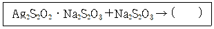
- Ag2S2O6∙Na2S4
- Na2Ag2 + Na4S6O9
- Ag2S2O3∙2Na2S2O3
- Ag2S2O3∙Na2S2O3
(정답률: 알수없음)
40. 지폐 권은 반복되는 접힘에 견디는 성질이 좋다. 이와 같은 목적으로 시험하는 강도 측정법은?
- 인장 강도
- 인열 강도
- 내절도
- 빳빳이도
(정답률: 알수없음)
3과목: 인쇄색채학
41. 다음 중 물리적으로 시감반사율이 높고 낮음을 말하는 것은?
- 색상
- 명도
- 채도
- 색입체
(정답률: 알수없음)
42. 색이 가지는 여러 가지 특성 중 기능적인 응용의 예로서 표지 기능이 지정된 색과 일치하지 않는 것은?
- 빨강-화재, 폭발, 흥분, 정지
- 노랑-주의, 통로, 불안
- 녹색-구호, 안전, 진행
- 검정-안정, 휴양, 성장, 죽음
(정답률: 알수없음)
43. 다음 중 디지털인쇄 제작 과정에서 적용하는 색공간과 관계가 적은 것은?
- CMYK
- CIEXYZ
- CIEL*a*b*
- CIEL*C*h
(정답률: 알수없음)
44. 오스트발트 표색기호를 2Rne로 표시했을 경우 백색량을 표시하는 기호는?
- 2
- 2R
- n
- e
(정답률: 알수없음)
45. 그림은 GATF Color Circle 이다. 점 P의 회색도(%)는?
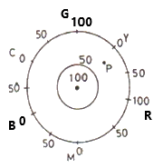
- 25
- 50
- 75
- 150
(정답률: 알수없음)
46. 포지티브 필름에 빛이 입사할 때 입사광을 A1 이라고 하고 투과광을 A2 라고 했을 때 투과율 T로 적합한 것은?
- T = A1 × A2
- T = A1 + A2
- T = A1 – A2
- T = A2 / A1
(정답률: 알수없음)
47. 인쇄할 컬러 원고를 RGB 색공간 모니터에서 재현할 때, 가장 적당한 전체 비트심도(Bit Depth)는?
- 8bit
- 16bit
- 24bit
- 32bit
(정답률: 알수없음)
48. 일반적으로 무지개에서 볼 수 있는 가시파장 영역은?
- 380nm ~ 780 nm
- 480nm ~ 880 nm
- 580nm ~ 980 nm
- 680nm ~ 1080 nm
(정답률: 알수없음)
49. 분광반사율의 측정에 대한 설명으로 맞지 않는 것은?
- 시료와 기준반사판의 반사 신호의 비율로 측정
- 분광반사율은 400nm 이하에서 측정
- 분광광도계에 적분구를 장착하여 측정
- 시료에 단색광을 입사시켜 반사된 광신호를 읽어 분광반사율 측정
(정답률: 알수없음)
50. 하프톤에 의해 인쇄물의 색재현을 했을 때 컬러 인쇄의 경우는 Cyan, Magenta, Yeiiow, Black의 각종 잉크가 망점화되어 형성되는데 용지면에 인쇄되는 형태를 Cyan, Magenta, Yellow 잉크만이 인쇄되는 부분의 면적율로 옳은 것은? (단, 그림 안에서 ②영역은 Cyan, ③영역은 Magenta, ⑤영역은 Yellow 이며 ①영역은 잉크가 인쇄되지 않는 부분이고, C:Cyan, M:Magenta, Y:Yellow 에 해당함.)
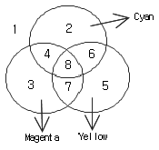
- Y(1-C)(1-M)
- Y(1+C)(1+M)
- Y(1+M)(1+Y)
- Y(1-M)(1-Y)
(정답률: 알수없음)
51. 다음 중 명도에 관한 설명으로 틀린 것은?
- 색의 밝고 어두운 정도를 말한다.
- 물리적으로는 시감반사율의 고저를 말한다.
- 무채색은 시감반사율의 고저와 상관없이 명도는 같다.
- 인간의 눈은 색의 3속성 중 명도에 관한 감각이 가장 예민하다.
(정답률: 알수없음)
52. CIE에서 정한 R, G, B 단색광의 파장영역을 가장 바르게 연결한 것은?
- 700nm, 546nm, 435.8nm
- 700nm, 446nm, 435.8nm
- 700nm, 500nm, 440nm
- 780nm, 546nm, 435.8nm
(정답률: 알수없음)
53. 가색법의 3원색과 감색법의 3원색에서 보색관계가 옳은 것은?
- Blue ↔ Magenta
- Green ↔ Cyan
- Yellow ↔ Blue
- Cyan ↔ Black
(정답률: 알수없음)
54. 어떤 물체의 색이 CIE1976L*u*v* 색공간에서 u* 값이 4 이고, v*값이 3일 때 채도 C*uv 값은 얼마인가?
- 1
- 5
- 7
- 12
(정답률: 알수없음)
55. 광원색의 3자극치의 안분비례를 내기 위해서는
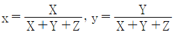
의 식으로 계산되는데 다음 설명 중 틀린 것은?- x, y 의 수치만으로도 빛의 색의 밝기는 표시된다.
- 빛의 밝기는 Y의 값으로 나타내도록 되어 있다.
- x, y 는 색도 좌표로서 그 빛의 색의 성질, 색상과 채도를 나타낸다.
- x : Y : Z 가 일정한 색이라도 3원색광의 강도가 다르면 색의 밝기도 달라질 수 있다.
(정답률: 알수없음)
56. 색의 3속성을 3차원의 공간 속에 계통적으로 배열한 것은?
- 컬러챠트
- 컬러메칭가이드
- 색표
- 색입체
(정답률: 알수없음)
57. 빛이 매질을 통과할 때의 설명으로 틀린 것은?
- 빛이 물체에 부딧히면 반사와 동시에 투과한다.
- 빛이 서로 다른 매질을 통과하면 굴절한다.
- 빛의 매질과 직각이면 굴절하지 않는다.
- 빛의 입사각이 커질수록 투과량이 증가한다.
(정답률: 알수없음)
58. 그라스만은 중간혼색 또는 평균혼색이라고 불리는 색광의 가법혼색에 관한 법칙을 제창하였다. 다음 중 그라스만의 법칙으로 틀린 것은?
- 가법혼색은 모두 연속적으로 변화한다.
- 그라스만의 법칙은 동시가법혼색에만 해당된다.
- 가법혼색의 결과는 그 분광조성의 여하를 불문하고 색자극의 겉보기만이 영향을 준다.
- 색자극의 규정 표시상 상호 독립된 파장∙휘도∙순도의 세 가지 양이 필요충분조건이 된다.
(정답률: 알수없음)
59. 상업미술에 널리 응용되고 있는 오스트발트 색입체에서 같은 색조의 색을 선택하려고 할 때 사용하는 방법이 아닌 것은?
- 등백색 계열
- 등순색 계열
- 등가색환 계열
- 등보색∙등감색 계열
(정답률: 알수없음)
60. 한 가지 색이 다른 색에 둘러싸여 있을 때 둘러싸여 있는 색이 주위의 색과 비슷해 보이는 현상은?
- 무채순응
- 색순응
- 색각현상
- 동화현상
(정답률: 알수없음)
4과목: 사진제판공학
61. 컬러 스캐너 중에서 평면 주사식의 장점이 아닌 것은?
- CCD 입력방식
- 자동 set-up 방식
- 주사 속도가 빠르다.
- 재현농도역이 크다.
(정답률: 알수없음)
62. 교정인쇄기의 블랭킷(Blanket) 이 갖추어야 할 조건 중에서 중요도가 가장 적은 것은?
- 내마모성
- 내유성
- 내용제성
- 잉크전이성
(정답률: 알수없음)
63. 다음 중 인쇄물의 출력선수로 적당한 것은?
- 일반 잡지, 전단지 - 90선
- 카달로그, 고급 인쇄물 - 175선
- 신문용지계열 - 200선
- 판지계열 인쇄물 - 250선
(정답률: 알수없음)
64. 평판 스캐너 선택시 주의사항과 가장 거리가 먼 것은?
- 광학 해상도
- 색상 깊이
- 농도 범위
- 컬러 분해방식
(정답률: 알수없음)
65. 투과원고로 사용하는 컬러필름의 농도역으로 적당한 것은?
- 1.80 ~ 2.00
- 0.60 ~ 2.40
- 2.30 ~ 2.60
- 3.00 ~ 4.50
(정답률: 알수없음)
66. 자동현상기에서 출력된 결과물의 농도가 점차 떨어졌다. 다음 중 무엇이 문제인가?
- 현상액의 피로도
- 높은 현상온도
- 현상시간 과다
- 필름의 두께
(정답률: 알수없음)
67. 교정인쇄에 대한 설명으로 옳지 않은 것은?
- 인쇄작업자가 표준원고로 삼아 인쇄하는 인쇄용 원본이라고 할 수 있다.
- 정확한 컬러를 예측하기 위해 만들어진다.
- 발주자에게 최종 인쇄물을 예측하게 해준다.
- 디자인 단계에서 만들어 발주자에게 보여주는 것이 원칙이다.
(정답률: 알수없음)
68. 제판작업에서 빛쬠의 적정 노출량을 측정하여 작업기준을 설정하기 위해서 사용되는 것은?
- slur gauge
- signal strip
- step tablet
- contact screen
(정답률: 알수없음)
69. 교정인쇄에 방법 중 사진법에 해당되지 않는 것은?
- 오버레이 교정
- 특수인화 교정
- 본인쇄기 교정
- 서프린트 교정
(정답률: 알수없음)
70. 8 bit 컬러시스템에서 재현 가능한 컬러의 수는?
- 32 color
- 64 color
- 128color
- 256 color
(정답률: 알수없음)
71. 감광재료와 렌즈의 해상력으로 전체 해상력을 나타내는 식으로 옳게 나타낸 것은? (단, K : 해상력, L : 렌즈의 해상력, M : 감광재료의 해상력)
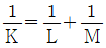
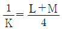
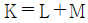
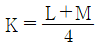
(정답률: 알수없음)
72. 사진 제판용 광원 중 색온도가 가장 높으며, 태양광과 비슷한 분광에너지 분포를 지니고 있고, 자외선 및 적외선부에서도 풍부한 에너지를 가지고 있는 광원은?
- 형광 수은등
- 텅스텐 전구
- 크세논등
- 사진전구(플랫램프)
(정답률: 알수없음)
73. 교정 필름, 인쇄판 및 인쇄물에서 망점의 품질 평가를 결정하는 관리용 스케일로서 단계별로 숫자(0~9) 모양으로 표시하여 관리하도록 되어 있는 것은?
- 그레이스케일
- 컬러패치
- 도트게인스케일
- 그라데이션스케일
(정답률: 알수없음)
74. 흐림(Fog)에 대한 설명 중 틀린 것은?
- 포그 농도는 특성곡선에서 족부 밑에 있다.
- 노출량 값을 0으로 기준하여 흐림 농도값을 나타낸다.
- 감광유제 자체에서 오는 포그는 전혀 없다.
- 보존 중에 고온, 고습하에서 감광핵이 성장하여 흐림이 생성되기 쉽다.
(정답률: 알수없음)
75. 입사광의 강도가 100, 필름을 투과한 후의 빛의 강도가 10인 어떤 필름이 있다. 이 필름의 투과농도는?
- 0.1
- 1.0
- 10
- 100
(정답률: 알수없음)
76. 프리프레스의 기능 중 페이지레이아웃에 속하는 것은?
- 따내기 작업
- 에어브러시
- 더블 효과
- 화면의 중첩
(정답률: 알수없음)
77. 다음 중 전자 출판의 장점으로 틀린 것은?
- 다른 매체로의 변환이 용이하다.
- 보존과 가공이 용이하다.
- 문자, 동영상, 소리 등의 저장이 가능하다.
- 정보검색이 불가능하다.
(정답률: 알수없음)
78. 렌즈의 표면 또는 카메라 내부표면 등 광학계에서 비롯된 반사광및 재반사광은 결상광이 아닌 비결상광으로써 이러한 빛이 감재에 닿게 되면 결함의 원인이 된다. 이러한 비결상광을 무엇이라 하는가?
- fog
- halation
- flare
- irradiation
(정답률: 알수없음)
79. 색분해 작업시 각 잉크에 함유되어 있는 다른 잉크의 성분을 제거하여 결점을 보정하는 것은?
- 색수정
- 색맞춤
- 색순응
- 색증감
(정답률: 알수없음)
80. 다음은 연조형, 보통형, 경조형, 극연조형 그라비어 필름의 특성곡선을 나타낸 것이다. 극연조형 그라비어 필름의 특성곡선에 해당되는 것은?
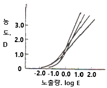
- 1
- 2
- 3
- 4
(정답률: 알수없음)